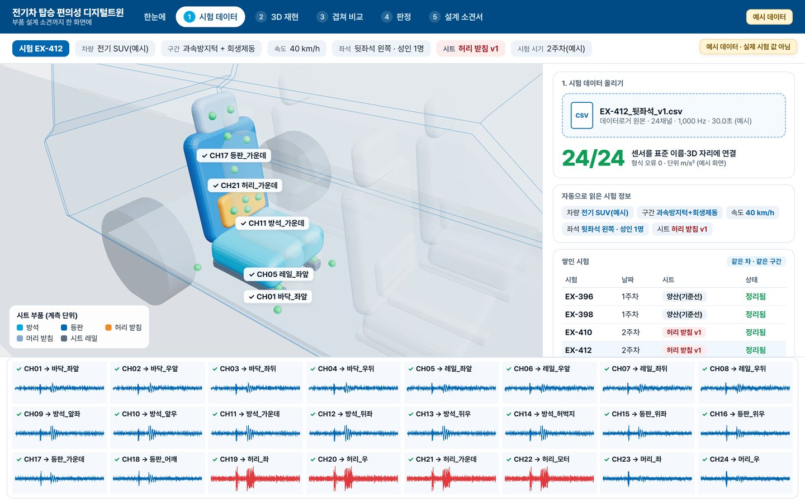

경북테크노파크 실차 시험 → 경북 부품기업의 설계까지
과속방지턱 한 번, 회생제동 한 번.
뒷좌석 시트의 어느 부품이, 언제, 얼마나 흔들렸고
어디를 먼저 살펴볼지 — 한 화면에서 바로.
👆 버튼을 누르거나, 3D 시트의 부품을 직접 눌러 보세요
왜 경북, 왜 지금
강한 가속과 회생제동, 노면 충격. 탑승자는 소리 대신 몸으로 차를 느낍니다.
광주·경북이 함께 키우는 미래차 탑승 편의 — 그중 경주가 맡은 주제가 주행 진동과 멀미입니다.
경주 외동·안강의 시트 프레임 · 시트 레일 · 파워 럼버서포트 · 시트 스위치. 일부 차종 뒷좌석에는 시트 안에 진동 모터까지 들어갑니다.
경북 부품기업이 얻는 3가지
시트를 방석·등판·허리 받침·레일로 나눠, 내 부품의 자리에서 흔들림을 봅니다.
같은 차·같은 구간에서 v1과 v2를 나란히. 판정은 “기준 안 ✓”처럼 한 줄로.
시험 데이터로 기업별 소견서 초안을 만들고, 담당자가 확인·보완합니다.
실차 시험이 설계 소견서가 되기까지

경북테크노파크 운영 성과판 예시
숫자는 화면 예시입니다. 구축 범위 안에서 센터 데이터로 집계하는 방안을 협의합니다.
왜 포켓메모리인가
설계 원본의 부품 이름·구조를 살려 가볍게 바꾸는 — 자체 개발 PM AutoTwin
현대자동차그룹 싱가포르 혁신센터(HMGICS) 메타팩토리 구축 사업 중 시뮬레이션·3D 환경 부분 참여(2021~2023)
현대자동차 UX전략팀 XR 기반 선행 HMI 프로토타입(2025)
대학병원 임상 의사결정 지원(CDSS) 개발(2024) — 데이터를 근거로 판단을 정리
2025년 과학기술정보통신부 장관상(월드 스마트시티 엑스포)